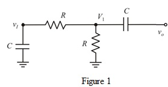
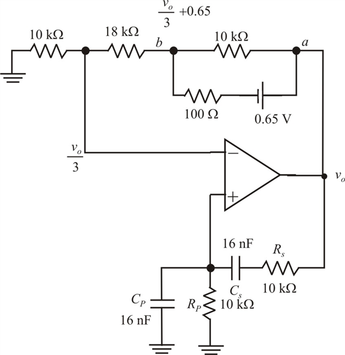

Apply Kirchhoff’s voltage law at node voltage .
.
…… (1)
Refer to equation 17.12 in the text book.
The frequaency of the sinusoid is,
Draw the feedback network of the circuit shown in Figure P17.13 in the text book.

Apply Kirchhoff’s voltage law at node voltage.
…… (1)
Apply Kirchhoff’s voltage law at node voltage .
.
Substitute for.
Determine the expression for the feedback factor .
.
Substitute  .
.
Determine the feedback factor at zero phase frequency.
The expression for the feedback input is,
The diode is in forward bias and the diode is in reverse bias.
Replace the diode with open-circuit and replace the diode  by a 0.65 V source in series with
by a 0.65 V source in series with  resistor.
resistor.
Draw the modified circuit.

Figure 2
Apply Kirchhoff’s current law at the inverting terminal of the op-amp in Figure 2.
Determine the peak-to-peak output voltage.
Thus, the peak-to-peak amplitude of the output sinusoid is.